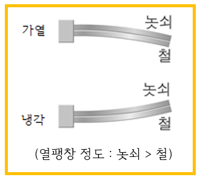
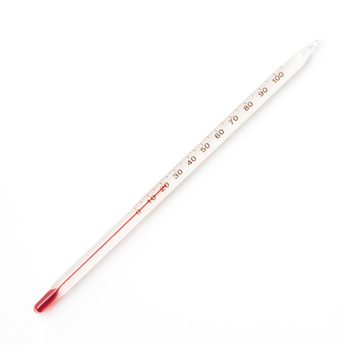

열팽창 온도에 따라 물체의 길이와 부피가 변하는 현상
입자의 운동이 활발해져 입자 사이의 거리가 멀어진다.

바이메탈 열팽창 정도가 다른 금속 두개를 붙여 놓은 장치
가열할땐 열팽창 정도가 작은 금속쪽으로 휘고, 냉각할땐 열팽창 정도가 큰 금속쪽으로 휜다.
예시-
여름에는 전깃줄이 쳐지고 겨울에는 팽팽하다.
잼 뚜껑에 뜨거운 물을 부으면 뚜껑이 열팽창하여 쉽게 열린다.
포개진 그릇이 빠지지 않을 때에는 안쪽 그릇에는 차가운 물을 넣고(수축),
바깥쪽 그릇은 뜨거운 물을 담으면(팽창) 쉽게 빠진다.

온도계 온도계 속 액체(알코올 아니면 수은)의 온도가 올라가면 부피가 팽창해 눈금이 올라가고,
온도가 낮아지면 부피가 수축해 눈금이 내려간다.
예시-
음료수의 열팽창으로 병이 터지는 것을 막기 위해 병에 음료수를 가득 채우지 않는다.